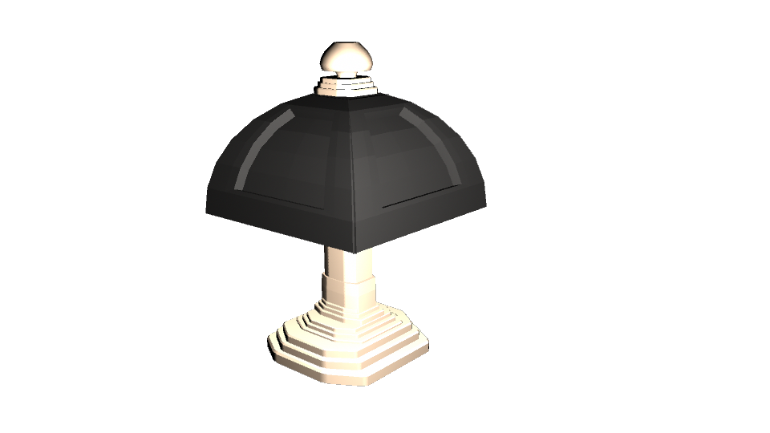
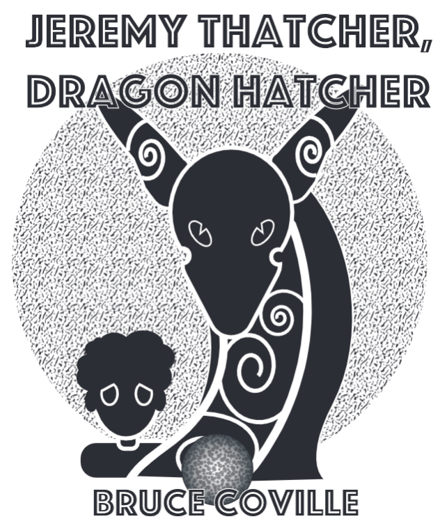
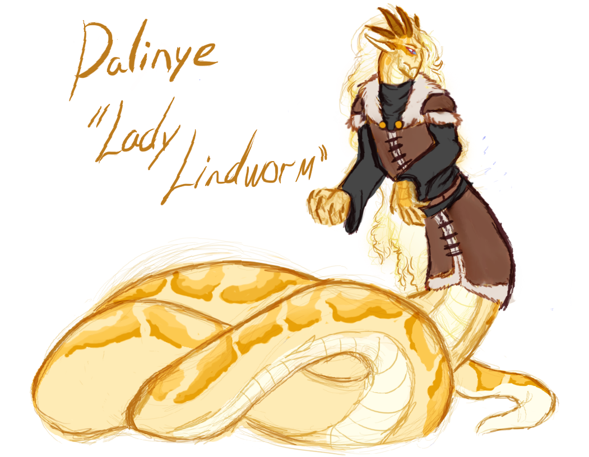

Casselberry, FL 32707
407-274-5353
milagromercado1@gmail.com
Milagro Mercado is a multimedia jack-of-trades with skills focused primarily towards digital concept art and character design.
Specifically, in context of fictional writing, game development, and tabletop roleplaying game systems. This has been a focus of hers since early 2010.
Outside of the digital landscape, her retail employment allowed for understanding of teamwork, flow, communication between a both service provider and consumer, while actively meeting deadlines.
She is also bilingual, speaking both English and Spanish proficiently. Her upbringing allows her to apply viewpoints from several demographics.
This is just a small sampling of work Milagro has done over the years!



Twitter:@milagromercad0
LinkedIn:Milagro Mercado